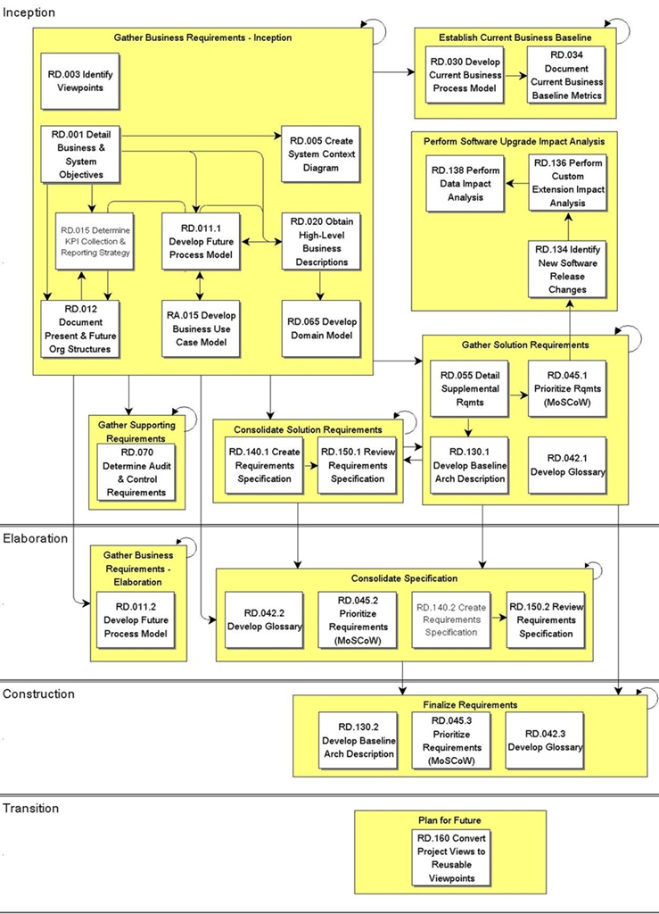

OUM |
Process Overview |
||
Method Navigation |
Current Page Navigation |
||
|
|
||||||||
In the Business Requirements process, you define the business needs that will be fulfilled by the application system. The business requirements for the proposed system or new enhancements are identified, refined and prioritized by a tightly integrated team of empowered ambassador users and experienced analysts. The process often begins from an existing high-level requirements document and a scope document, such as the Project Management Plan, Validated Scope (PJM SM.010). However, it is possible to begin from an agreed on scope and objectives before requirements have been defined. The Business Requirements process delivers a set of requirements models and a prioritized list of requirements as a basis for system development. Both the models and requirements list are dynamic and may change as the understanding of the team develops with the system.
The main work products or outputs of this process are the business objectives and goals, the list of functional requirements and the supplemental requirements.
 This process overview is written from the perspective of a Full Method View, utilizing ALL of the activities and tasks in this process. Therefore, all of the following sections provide comprehensive information. If your project is utilizing a tailored approach (for example, Technology Full Lifecycle View, Application Implementation View, Middleware Architecture View), not everything in this overview may be appropriate for your project. Please keep this in mind, especially when reviewing the Key Work Products and Tasks and Work Products sections. You should use OUM as a guideline for performing all types of information technology projects, but keep in mind that every project is different and that you need to adjust project activities according to each situation. Do not hesitate to add, remove, or rearrange tasks, but be sure to reflect these changes in your estimates and risk management planning. You should also consider the depth to which you address and complete each task based on the characteristics of your particular project or project increment. See Oracle's Full Lifecycle Method for Deploying Oracle-Based Business Solutions for further information on the scalability and adaptability of OUM.
This process overview is written from the perspective of a Full Method View, utilizing ALL of the activities and tasks in this process. Therefore, all of the following sections provide comprehensive information. If your project is utilizing a tailored approach (for example, Technology Full Lifecycle View, Application Implementation View, Middleware Architecture View), not everything in this overview may be appropriate for your project. Please keep this in mind, especially when reviewing the Key Work Products and Tasks and Work Products sections. You should use OUM as a guideline for performing all types of information technology projects, but keep in mind that every project is different and that you need to adjust project activities according to each situation. Do not hesitate to add, remove, or rearrange tasks, but be sure to reflect these changes in your estimates and risk management planning. You should also consider the depth to which you address and complete each task based on the characteristics of your particular project or project increment. See Oracle's Full Lifecycle Method for Deploying Oracle-Based Business Solutions for further information on the scalability and adaptability of OUM.
This process flow for this process follows:

Depending on your project (e.g., large, complex, etc.), the project manager may designate a Business Requirements team leader and/or team leaders for various other reasons that the project manager deems necessary. If the project manager designates team leaders, they are responsible for leading their team and reviewing the work products produced by their team. The team leader plans, directs, and monitors the day-to-day work of the team. The team leader assigns work packages to the team members and makes sure they understand the requirements. The team leader is responsible for building team cohesion, motivating the teams, and providing assistance and encouragement to the team members. Each team leader performs the final quality control and quality assurance for the team by reviewing all work products. The team leader also signs off on team work completion and quality. Work that is not up to quality standards is returned. Team leaders review work products from other teams when these work products may impact aspects of the system. The team leader reports the team's progress to the project manager. Refer to Project Management in OUM for additional information on team leaders.
The Business Requirements process begins with defining the Business and System Objectives (RD.001). These objectives form the actual business benefits the customer wants to achieve by the new system. This is an important input to use during the rest of the project, from the beginning to the end. It will help in defining the right priorities, and to make decisions in line with the objectives.
Another early task is the creation of a System Context Diagram (RD.005) for the proposed system. The model identifies the business areas covered, all external data flows into and out of the proposed system and the related external systems.
The team then proceeds to high-level modeling, beginning with the identification and definition of the primary business processes. The requirements are transformed into the requirement models, the Future Process Model (RD.011.1), High-Level Business Descriptions (RD.020) and the Domain Model (RD.065). Often all these tasks are often performed as part of the same (or following) Business Requirements Workshops. Workshop techniques are used to determine the business process model, more detail is provided in the business descriptions, and may trigger changes to the process model. At the end of the Business Requirements Workshop, these work products should be consistent with each other.
During this process we also, together with the ambassador users, develop and prioritize a list of requirements, and produce the MoSCoW List (RD.045). The prioritization of this list confirms the current requirements. This is sometimes done partly of fully as part of the Business Requirements Workshop(s), but often you need to gather everything at the end of the workshop, and perform a separate workshop to produce the final MoSCoW List.
The Domain Model as a business domain model is often created in parallel with the Business Use Case Model (from the Requirements Analysis process) to model all the relevant business objects that relate to the Business Use Case Model.
In parallel, the supplemental requirements are defined. Some of these might have come up in the Business Requirements Workshops, but using a separate workshop is recommended to identify supplemental requirements that go into the Supplemental Requirements (RD.055). As for the functional requirements, these are prioritized using the MoSCoW principle.
In addition, a baseline Architecture Description (RD.130) is developed. The goal of this task is to highlight the factors that influence the application architecture and to enumerate strategies for dealing with these factors in the architectural design. Development of the Architecture Description starts with the identification of organizational, technological and product factors that may affect the architectural design. These may have come up as part of both the functional and supplemental requirements, some are constraints that are given for the project. Finally, from the prioritized list of requirements (MoSCoW List), the initial requirements models, and the Supplemental Requirements, the requirements are consolidated into a Requirements Specification (RD.140) that undergoes a peer-review (RD.150). This may be done in a number of iterations. Such an iteration may either consist of a subset of the Requirements Specification, or cover the complete set of requirements. This will depend on the size of the application to develop, the complexity, and the vagueness of the requirements. Typically, the smaller application, the lesser complex and the clearer requirements, the more requirements you include in a single iteration, as you do not expect too much to be changed as a result of the review. After a peer-review, any new and changed requirements are incorporated into the Reviewed Requirements Specification that may undergo a new review.
After the final peer-review, the project manager reviews and if necessary, (re)defines the project plan and partition(s), and again any new and changed requirements are incorporated into the appropriate requirements models, and (re)prioritized.
*This process has Application Implementation supplemental process guidance.
This process has supplemental guidance that should be considered if you are doing an application implementation. Use the OUM Application Implementation Supplemental Guide to access all application implementation supplemental information. You can also go directly to the Business Requirements process supplemental guidance.
The tasks and work products for this process are as follows:
| ID | Task | Work Product |
|---|---|---|
Inception Phase |
||
RD.001 |
Detail Business And System Objectives | Business and System Objectives |
RD.003 |
Identify Viewpoints | Viewpoints List |
RD.005 |
Create System Context Diagram | System Context Diagram |
RD.011.1 |
Develop Future Process Model | Future Process Model |
RD.012 |
Document Present And Future Organization Structures | Present And Future Organization Structures |
RD.015 |
Determine KPI Collection and Reporting Strategy | Key Business Strategies and Objectives |
RD.020 |
Obtain High-Level Business Descriptions | High-Level Business Descriptions |
RD.030 |
Develop Current Business Process Model | Current Process Model |
RD.034 |
Document Current Business Baseline Metrics | Current Business Baseline Metrics |
RD.042.1 |
Develop Glossary | Glossary |
RD.045.1 |
Prioritize Requirements (MoSCoW) | Moscow List |
RD.055 |
Detail Supplemental Requirements | Supplemental Requirements |
RD.065 |
Develop Domain Model (Business Entities) | Domain Model |
RD.070 |
Determine Audit and Control Requirements | Audit and Control Requirements |
RD.130.1 |
Develop Baseline Architecture Description | Architecture Description |
RD.134 |
Identify New Software Release Changes | Software Release Changes Summary |
RD.136 |
Perform Custom Extension Impact Analysis | Custom Extension Impact Analysis |
RD.138 |
Perform Data Impact Analysis | Data Impact Analysis |
RD.140.1 |
Create Requirements Specification | Requirements Specification |
RD.150.1 |
Review Requirements Specification | Reviewed Requirements Specification |
Elaboration Phase |
||
RD.011.2 |
Develop Future Process Model | Future Process Model |
RD.042.2 |
Develop Glossary | Glossary |
RD.045.2 |
Prioritize Requirements (MoSCoW) | Moscow List |
RD.140.2 |
Create Requirements Specification | Requirements Specification |
RD.150.2 |
Review Requirements Specification | Reviewed Requirements Specification |
Construction Phase |
||
RD.042.3 |
Develop Glossary | Glossary |
RD.045.3 |
Prioritize Requirements (MoSCoW) | Moscow List |
RD.130.2 |
Develop Baseline Architecture Description | Architecture Description |
Construction Phase |
||
RD.160 |
Convert Project Views to Reusable Viewpoints | New Reusable Viewpoints |
The objectives of the Business Requirements process are:
Refer to Key Work Products for a complete list of key work products in OUM.
The following roles are required to perform the tasks within this process:
| Role ID | Name | Responsibility |
|---|---|---|
Implementing Organization |
||
| APS | Application/Product Specialist | In a commercial off-the-shelf (COTS) application implementation, this person provides functional knowledge about the COTS application. |
| BA | Business Analyst | Facilitate workshops, interviews or meetings. Prepare for the workshop and lead the modeling activities. Record/document models and work products. Develop the Glossary. Focus on a clear definition of project scope. Verify that the business and system objectives are achievable and testable. Communicate the need for commitment from the organization. Facilitate the development of the Current Process Model. Consolidate requirements into a single Supplemental Requirements document. Develop the Domain Model. Determine and document the Audit and Control Requirements. Help formulate and prioritize the organization and product architectural risk factors. Consolidate requirements into a single Requirements Specification document. Review Requirements Specification. |
| DES | Designer | Resolve any conflicts that arise between teams concerning the definition of shared domains for the Domain Model (RD.065). Review Requirements Specification. |
| SAN | System Analyst | Review Requirements Specification. |
| SA | System Architect | Help consolidate requirements into a single Supplemental Requirements document and single Requirements Specification document. Facilitate workshops, interviews or meetings. Formulate technological risk factors. Facilitate and review the Requirements Specification. |
Customer (User) |
||
| KEY | Ambassador User | Provide information about the business, business processes, organization units and external interfaces. Participate in modeling. Provide information about business terms. Help consolidate requirements into a single Supplemental Requirements document and single Requirements Specification document. Provide information about domain objects related to the business. Participate in the determining the Audit and Control Requirements. Formulate and prioritize the organization and product architectural risk factors. Review Requirements Specification. |
| BLM | Business Line Manager | Provide information about the business Select the business processes that should be baselined. Assist in determining the Audit and Control Requirements. |
| CPM | Customer Project Manager | Focus on staffing and other organizational issues that must be addressed in order to achieve the objectives. |
| CSM | Customer Staff Member | Collaborate with the business analyst and the application product specialist to confirm the KPI benefits and their measurement. |
| OS | IS Operations Staff | Provide information about existing systems and their operation. |
| SS | IS Support Staff | Provide information about system terms. |
| CPS | Project Sponsor | Responsible for all budget issues. Provide information about the business. Provide business context information about the process(es) being modeled. |
| USR | User | Provide information about a particular business process. |
| VS | Visionary | Communicate the vision. |
The critical success factors of this process are:

Copyright © 2006, 2016, Oracle and/or its affiliates. All rights reserved.